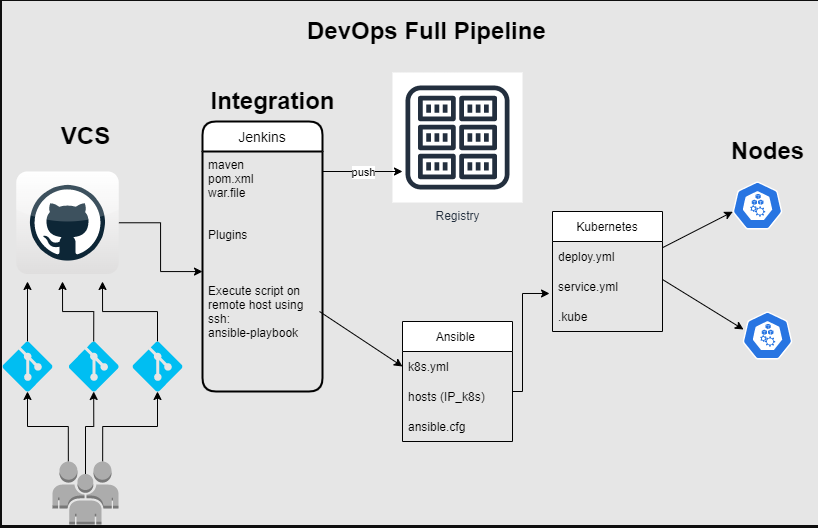
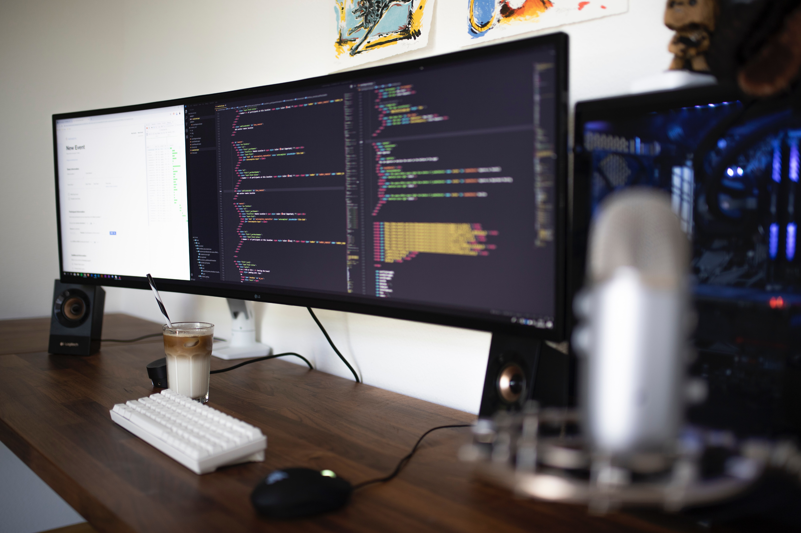

Deploy_to_Tomcat
CI/CD pipeline to package and deploy war files to tomcat. We had a client that run a small business.
For the needs of his business, i automated the process to deploy a java web application inside a Tomcat server container
View here

Deploy_to_k8s
In my company, we had a project to set up a whole CI/CD pipeline. The app was going to be deployed in a kubernetes cluster.
I had to automate the process from the developer's local machine to kubernetes cluster on AWS using "kops".
View here
User_Authorization
The task is to enable user authorization in Jenkins using a Role-Based strategy.
Roles can be defined globally or for particular jobs or nodes selected by regular expressions.
View here
Slack_Notify
In order to check artifact after build in Jenkins, we use Slack to notify for build start, success, aborted, not built, unstable, regression, every failure, notify back to normal.
View here

Monitor_EKS>
To monitore the overall health of the Elastic Kubernetes service, we needed to deploy a monitoring solution.
My job was to install and configure prometheus and grafana on the kubernetes cluster.
View here
Deploy_to_EKS
We had a client that want to automate the deployment of his app to EKS (Elastic Kubernetes Services).
I was tasked to build the artifact, then store it in ECR and deploy to EKS
View here
Migrate_to_AWS
To reduce costs of operations and in downtime, we had client that decided to migrate to AWS.
View here

App_on_AWS
In my company, we had a client that have an idea to run an school online. He wanted a pay-as-you-go pricing.
we set up on AWS Console the whole infrastructure to Run his application .
View here

LAMP_Stack
LAMP Stack enables the web application development platform to maintain the high performance of the website.
So, we had some clients that we advised and set up Linux at the base, then Apache, MySQL,
and the PHP on the topmost layer for their business's needs.
View here

Setup_LoadBalancer
To provide availability and scability to the application, we set up LoadBalancer that distributes connections from clients between a set of servers.
Load balancers health check the application on the server to determine its availability.
View here

Server_Down
Sometimes, the server that runs an application can go down. We have to investigate, figure out and resolve the issues and
View here

Inventory_Server
there was some servers at work that needed to be decommissioned and we are tasked to do a complete inventory of
those servers.
View here

Check_Yaml_Python
Ansible uses YAML to construct automation processes. Kubernetes uses YAML to
create resources such as pods, services and deployments. It is really necessary to have a python script to check the syntax.
View here

Convert_File_Python
Sometimes, we have file that was created in one application and we want to use it in another.
To load file in BigQuery, I have to convert a TXT file to a CSV file. I use this python script to do the job.
View here

Docker_image_Shell
Docker images act as a set of instructions to build a Docker container, like a template. To deploy more secure containers, we usually create our own Docker image. We write a Shell script to automate the process.
View here

Wordpress_Setup_Shell
As a DevOps, whenever I find myself repeating a task several times my first thought is: “Can I automate this?”
We sometimes have many servers to Set up Wordpress on it, I write a Shell script to automate the the steps.
View here